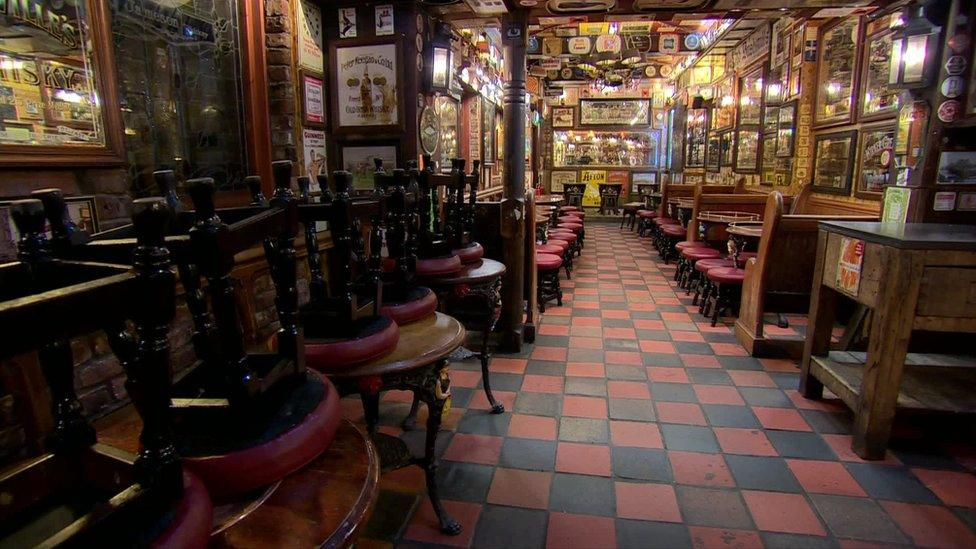

Sweden Selects Rolls-Royce SMR for First New Nuclear Power Project in More Than Four Decades


Sweden has taken a significant step to boost its nuclear power capacity with state-owned utility Vattenfall picking Rolls-Royce SMR as its preferred technology partner for a new nuclear power project. It is the first time in more than four decades Sweden has moved to advance plans to build new nuclear reactors.
The project is part of Sweden's broader strategy to boost long-term electricity production, while supporting industrial growth, and helping reach decarbonisation goals. With the prospect of a large increase in electricity demand over the coming decades, policymakers have increasingly emphasised the importance of reliable low-carbon energy sources.
Vattenfall selected Rolls-Royce SMR after a competitive evaluation process that considered several reactor technologies. The utility identified small modular reactors as a promising solution because of their scalability, shorter construction timelines and potential cost advantages compared with conventional large-scale nuclear plants.
The announcement represents one of the most important developments in Europe's emerging small modular reactor industry and highlights growing interest in next-generation nuclear technologies.
Rolls-Royce SMR Wins Landmark European Opportunity
Under the agreement, Rolls-Royce SMR will work with Vattenfall to advance plans for deploying small modular reactors at Sweden's existing nuclear sites.
The British company described the selection as a major milestone for its reactor technology and one of the most significant commercial opportunities in its history. Rolls-Royce SMR said the project could eventually support the construction of multiple reactor units capable of providing substantial amounts of low-carbon electricity.
Small modular reactors are designed to be manufactured using standardized components and assembled more efficiently than traditional nuclear plants. Supporters argue that this approach can reduce construction risks, improve cost predictability and accelerate deployment schedules.
The Swedish project also enhances Rolls-Royce SMR's reputation as it pursues opportunities in Europe and other international markets looking for new nuclear generation capacity. The decision is viewed by industry observers as a strong endorsement of the company's technology and long-term commercial strategy.
Power Demand Spurs Nuclear Revival
Sweden's nuclear renaissance is part of a wider revival in Europe and other advanced economies. Governments are wrestling with the tradeoffs between climate goals and concerns about energy security and grid resilience. Soaring power demand from industrial activity, transport electrification and AI-driven data centres has fuelled the hunt for reliable low-carbon power.
Supporters of nuclear power say reactors provide a reliable source of power generation, not dependent on weather, and can help complement renewables like wind and solar which can be intermittent, prompting some countries to reconsider nuclear investment after years of stagnation. Sweden already relies heavily on a mix of nuclear and hydro power.
But officials have warned that future demand growth will need extra generation capacity to remain competitive and support economic growth. The decision to pursue new reactors signals a major shift in long-term energy planning and places Sweden among the countries leading Europe's nuclear resurgence.
Project Could Influence Europe's Nuclear Future
The Vattenfall-Rolls-Royce partnership is expected to be closely watched by governments, utilities and investors across Europe. Successful deployment of small modular reactors in Sweden could provide an important demonstration of the commercial viability of the technology and encourage similar projects elsewhere. Many countries are assessing SMRs as a potential solution to future energy challenges but have yet to move beyond planning stages.
The choice of a preferred technology partner is another key milestone in the development process but prior to construction, regulatory reviews, licensing requirements and investment decisions are still to be made. For Rolls-Royce SMR, the deal offers an opportunity to secure a flagship European project that could bolster its position in the global nuclear marketplace.
For Sweden, it's a big step along the way to providing future generations with clean, low-carbon electricity. As governments seek ways to reconcile energy security, affordability and climate goals, the Swedish project could become one of the defining tests of the next generation of nuclear power technology.
Business

